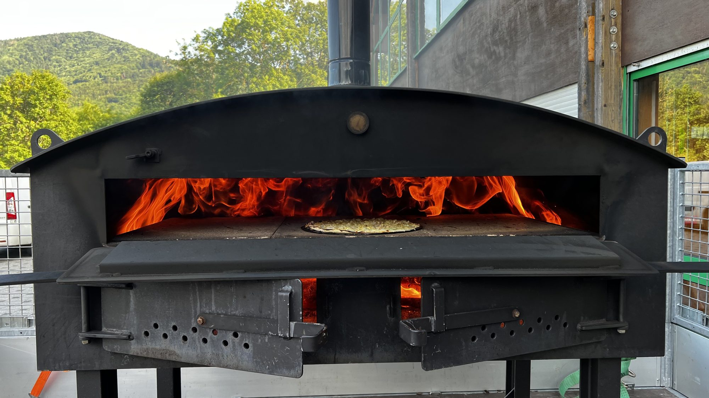
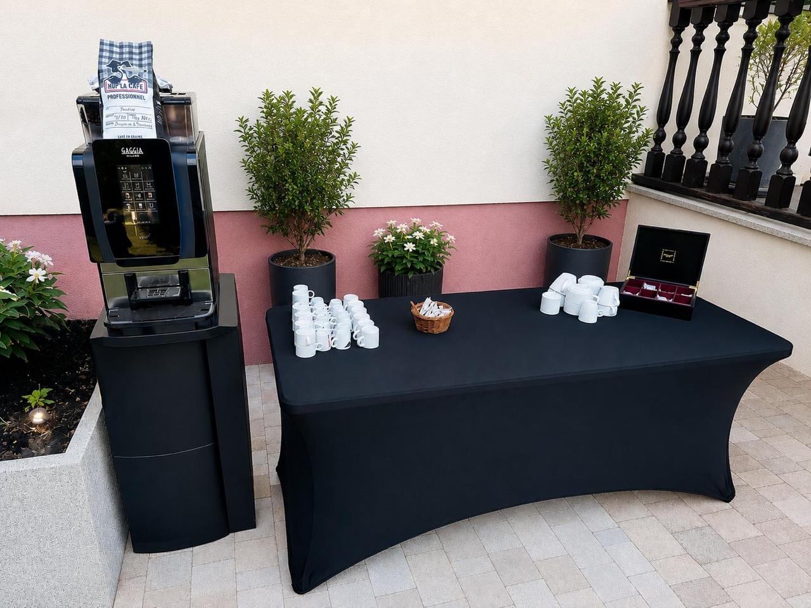
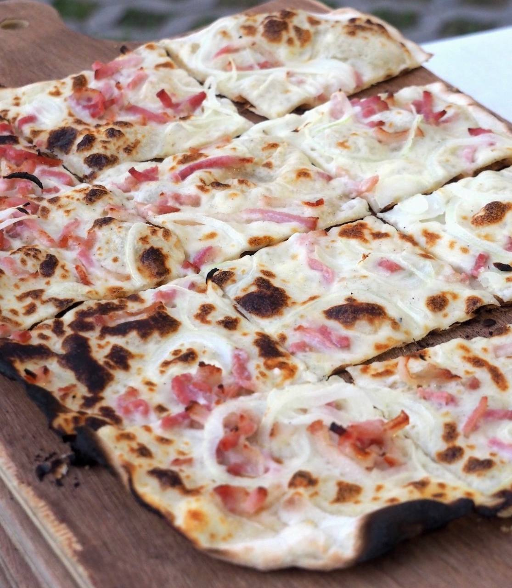
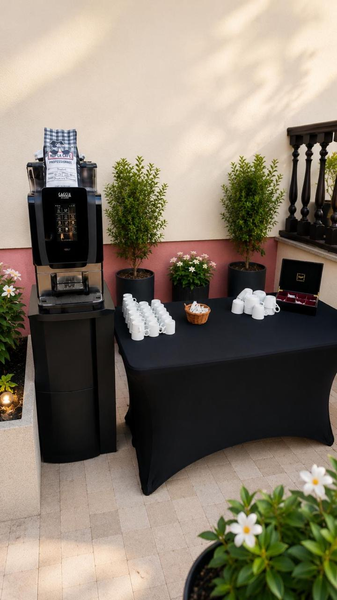

Un moment simple, généreux, qui rassemble vos invités.
On installe le four, on prépare les tartes flambées sur place et on crée une ambiance conviviale pour vos soirées privées, repas d’entreprise, anniversaires, associations ou réceptions clients.


Pas juste un repas : un vrai point de rencontre.
Ces détails comptent : un stand propre, un service fluide, un espace qui reste agréable pendant toute la soirée. Que ce soit pour accueillir des proches, remercier une équipe ou inviter des clients, la prestation doit donner une impression simple et soignée.
Accueil plus chaleureux
Les invités ne tombent pas sur un simple buffet froid : ils arrivent devant une vraie installation vivante.
Service visible
La cuisson et le dressage créent naturellement de la discussion autour du stand.
Fin de soirée agréable
On garde une atmosphère conviviale jusqu’au dernier moment, sans rendre le café central dans l’offre.
Une base simple, adaptable à votre événement.
L’objectif n’est pas de multiplier les options : on part de votre nombre d’invités, de votre lieu et de l’ambiance souhaitée, puis on propose le format le plus logique.
Soirée privée
Anniversaire, cousinade, repas de famille ou fête à la maison. Une formule conviviale, facile à comprendre pour les invités.
Entreprise & clients
Repas d’équipe, portes ouvertes, inauguration, soirée de fin d’année ou invitation client dans une ambiance détendue.
Association & grand groupe
Un format efficace pour servir beaucoup de monde, garder du rythme et créer un moment simple autour du four.
La chaleur du four, le rythme du service, l’odeur de la pâte qui cuit.
La force de la tarte flambée, c’est que le repas devient vivant. Les invités ne font pas seulement la queue : ils regardent, échangent, reviennent, goûtent. C’est exactement ce qu’on veut pour une soirée réussie.

“On vient manger, mais surtout on partage un moment.”
Pour tous les moments où il faut réunir sans compliquer.
Le même esprit peut servir plusieurs contextes : familial, professionnel, associatif ou festif.
Anniversaires & fêtes de famille
Un repas qui plaît à beaucoup de monde et qui garde les invités ensemble.
Équipe, clients, portes ouvertes
Un format détendu pour recevoir sans tomber dans un repas trop formel.
Associations & grands groupes
Un service lisible, efficace, avec une ambiance immédiate autour du four.
Vous nous indiquez le lieu, on s’occupe du moment.
Le visiteur doit comprendre rapidement ce qui va se passer. Pas besoin de discours administratif : juste un déroulé rassurant.
On valide le format
Nombre d’invités, type d’événement, lieu, horaire et contraintes pratiques.
On installe le stand
Four, matériel, espace de service et présentation propre avant l’arrivée des invités.
On sert sur place
Tartes flambées préparées et servies au rythme de l’événement.
Vous profitez
Une ambiance simple, chaleureuse, sans charge mentale pendant la soirée.
Le café reste un signe d’accueil, pas le sujet de la page.
Cette photo doit être utilisée comme une preuve d’ambiance : une installation propre, une attention portée aux invités, un espace qui reste accueillant après le service. Elle peut très bien vivre sur la page d’accueil, dans une section “ambiance”.

Les réponses utiles avant de demander un devis.
Est-ce adapté à une entreprise ?
Oui, surtout pour un repas d’équipe, une soirée de fin d’année, une porte ouverte ou une réception client avec une ambiance moins formelle.
Est-ce uniquement pour les grandes soirées ?
Non. Le format se réfléchit selon le nombre d’invités et le lieu. L’important est d’avoir assez d’espace pour installer et servir correctement.
Le café fait-il partie de l’offre ?
Pas besoin d’en faire une promesse centrale ici. On l’utilise surtout pour montrer le soin apporté à l’accueil et à la présentation.
On prépare votre prochain événement ?
Envoyez le nombre d’invités, la date souhaitée, le lieu et le type d’ambiance recherchée. On vous répond avec une proposition adaptée.